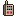

-
 [A lire] Je débute - Partie 1
[A lire] Je débute - Partie 1
-
[A lire] Je débute - Partie 2
-
[A lire] Je débute - Partie 3
-
Carte et terminaux du vaisseau
-
Légendes urbaines et mythes
-
Être mush - Premiers pas
-
Être mush - Tutoriel avancé
-
Compétences, mon compte, klix
-
Logs - Explications
-
Faire du roleplay
-
Guide de Survie (J10+)
-
Frieda - Tutoriel
-
Gioele - Tutoriel
-
Hua - Tutoriel
-
Roland - Tutoriel
-
Chun - Premiers pas
-
Chun - Tutoriel avancé
-
Eleesha - Premiers pas
-
Eleesha - Tutoriel avancé
-
Ian - Premiers pas
-
Ian - Tuto avancé
-
Janice - Premiers pas
-
Janice - Tutoriel avancé
-
Jin Su - Premiers pas
-
Jin Su - Tutoriel avancé
-
Kuan Ti - Premiers pas
-
Kuan Ti - Tutoriel avancé
-
Paola - Premiers pas
-
Paola - Tutoriel avancé
-
Raluca - Premiers pas
-
Raluca - Tutoriel avancé
-
Stephen - Premiers pas
-
Stephen - Tutoriel avancé
-
Terrence - Premiers Pas
-
Terrence - Tutoriel avancé
-
Finola - Tutoriel
-
Chao - Premiers Pas
-
Chao - Tutoriel avancé
-
Andie - Premiers pas
-
Andie - Tutoriel avancé
-
Derek - Tutoriel
-
Thème : L'astrophysique
-
Thème - La mécanique
-
L'enquête - Premiers pas
-
L'enquête - Avancé
-
Thème - La botanique
-
Recherches, projets et relais.
-
Thème : Le pilotage
-
Thème - Les expéditions
-
Titre : Responsable comm.
-
Titre : Commandant
-
Titre : Administrateur NERON
Guide de Survie (J10+)
Guide de Survie de Monsieur Chaussette
C'est moi, Jean-Louis, l'esprit de Noël!
J'espère que vous aimez les pavays, mais c'est pour votre bien. VO-TRE BI-EN!.
Quelques rappels des réflexes à avoir (ou ne pas avoir) pour éviter de se retrouver aplati ou réduit à l'état de débris spatial. C'est valable tout le temps et surtout à partir du J10 (quand les réservoirs cassent en boucle, que le vaisseau crame en permanence, et que le plafond se croit à la Chandeleur et essaye d'aplatir tout le monde comme des crêpes).
- Mettre en favori, garder à jour et toujours consulter le fil "Santé".
- Lire les logs des pièces où on passe pour soigner les absents (une plaque, deux secousses ou un combo de plusieurs blessures = soin urgent).
- Les soins sont prioritaires sur presque tout le reste.
- Si on est blessé et en fin de cycle, se soigner soi-même sans attendre.
- Toujours dire où on se trouve et préciser combien on a de pv (pour éviter d'être trop peu ou trop soigné).
- Se déplacer si besoin (infirmerie ou proche des dortoirs).
- Signaler, évidemment, si quelqu'un a été soigné.
- Toujours signaler où est le médikit.
- Aux alentours du J15, si possible : vérifier la santé de tout le monde à chaque cycle.
- Zones de danger : en-dessous de 10
 (en gros).
(en gros).
 Moral :
Moral :- Privilégier le gain de moral passif (faire tourner les lits dans le dortoir de la psy).
- Si on a besoin de moral, dire où on se trouve ou se déplacer, en précisant de combien de moral on a besoin (pour éviter les réconforts en trop).
- Penser à caresser le chat (une fois par partie), à vous confier à Andie (une fois par jour), à "le faire", à manger des fruits ou prendre des médicaments, à utiliser la télé alien (une fois par partie).
- Zone de danger : 8 environ.
 Récapitulation du Docteur Chaussette : Ne restez pas passif et soyez réactif.
Récapitulation du Docteur Chaussette : Ne restez pas passif et soyez réactif.
 Les topics MORAL et SANTE sont à faire que si le Mush est éliminé, pour éviter qu'ils vous tombent dessus
Les topics MORAL et SANTE sont à faire que si le Mush est éliminé, pour éviter qu'ils vous tombent dessus
 Entretien :
Entretien :- Toujours réparer immédiatement : simulateur de gravité, réservoirs d'oxygène.
- Réparer immédiatement si besoin de bouger : réacteur d'urgence, terminal de commandement + un réservoir de fuel et chambre de combustion si le fuel n'est pas chargé. Si on ne doit pas bouger, déposer des drones.
- A faire réparer par des drones : seulement ce qui est utile (à adapter selon le moment de la partie) : terminaux encore en service, machine à café, réacteurs latéraux, patrouilleurs (ne jamais les rénover à la main), sofa, douche, portes importantes + objets importants.
- Signaler les pannes non réparées (pour en garder le compte et repérer les pannes non annoncées par Néron en cas de surcharge).
- Toujours vérifier le nombre de pannes dans les alertes (toujours pour repérer les surcharges).
Bon à savoir : l'efficacité des drones augmente à chaque échec, comme pour nous, mais ne redescend pas après une réussite. Au bout de quelques réparations, ils ont 99% de chances de réussite en permanence. Il faut donc les "entraîner" le plus tôt possible. Récapitulation de l'Ingénieur Chaussette : Concentrez-vous sur l'essentiel.
 Explorations :
Explorations :- Toujours faire la liste des équipements adaptés à la planète et lire les consignes (voir http://twd.io/e/TiV80M/4 ou consulter Twinpedia si besoin).
- La boussole : en général pour le ou la diplomate, qui porte aussi les équipements importants (foreuse, module Babel...).
- Toujours avoir 12 pv ou plus avant de partir.
- Programmer les explos pour éviter les changements de cycle en plein milieu (risque de recevoir une plaque de métal en pleine explo).
- Charger un fuel pour quitter l'orbite dès que possible (on peut le faire dès le déplacement vers la planète lancé).
 Jardinage et ravitaillement :
Jardinage et ravitaillement :- Toujours garder les plantes sur soi à partir du J7 environ.
- Si on est botaniste : garder ses points de jardinage pour les greffes, les plantations et les soins.
- On peut arroser n'importe quand (plantes adultes ou plantes jeunes desséchées), mais on traite les maladies au cycle 8 (plantes adultes).
- Les fruits / rations / cafés les plus récents sont à droite, et plus on va vers la gauche, plus c'est pourri. Mais n'hésitez pas à manger de la nourriture avariée, les intoxications alimentaires ne sont pas graves du tout et passent très rapidement.
- Toujours viser en cliquant sur la cible choisir avant de tirer.
- En cas de grosse vague, si on peut se déplacer ou qu'on a une planète en vue : tuer les aracks et les trax uniquement. Garder les hunters pour après le déplacement (ils seront moins nombreux) et ignorez complètement astéroïdes et D1000 qui ne suivront pas.
- Si on ne peut pas bouger : hunters et aracks en priorités (plus faciles à détruire, souvent en un seul tir), puis les trax.
- Concernant les astéroïdes : si on a le bouclier plasma, une armure en bon état, des débris et/ou le vaguoscope, mieux vaut les laisser exploser sur le Daedalus. Décoller pour détruire un astéroïde est plus cher que réparer l'armure après l'impact.
- Concernant les D1000 : avec le bouclier, on peut les ignorer. Ils ne tirent qu'une fois par cycle, ne font pas de dégâts énormes, et coûtent trop cher à détruire.
- Créer des sujets strictement HRP bien visibles (en gras et rouge, avec icone visible) pour signaler les objectifs du moment. Utilisez aussi les annonces.
- Lisez ! Les derniers messages de Néron et des équipiers disent souvent ce qu'il y a à faire.
- Toujours consulter le sujet "Santé".
- Demandez. Mieux vaut demander où on peut être utile plutôt que de dépenser ses PA au hasard.
- S'il n'y a rien d'urgent à faire, vous n'êtes pas obligé de faire quelque chose. Mieux vaut avoir trop de PA que pas assez.
Santé et moral :- Ne jamais rester seul et/ou loin du médikit si on doit s'absenter plusieurs cycles.
- Ne pas disparaître juste après avoir demandé des soins ou du moral, sans attendre la réponse, les conseils, ou s'assurer que quelqu'un peut s'en occuper.
- Ne pas trop soigner. Inutile de se fatiguer pour une seule petite blessure.
Entretien :- Ne rien réparer à la main sauf urgence.
- Ignorer complètement certains équipements (cuisine, tourelles, plot chirurgical, Bios, tabulatrice, antenne si la com' est finie, etc.)
- Les réservoirs de fuel ne se réparent que si on en a besoin, nom d'un Mankarog.
- Inutile de rétablir la liaison quand la com' est terminée. Résumé de Monsieur Chaussette alias le Maniaque-du-gaspillage-de-PA : économisez vos PA pour les urgences.
- Inutile de décoller si on sait qu'on va se déplacer bientôt (sauf si aracks).
- Ne JAMAIS récolter de débris quand il y a des vaisseaux dehors.
- Les non-pilotes ne doivent pas utiliser les patrouilleurs ; on déverrouille le pilotage seulement pour leur permettre de lancer les explos (ou en cas d'extrême urgence).
- Ne pas faire de drone pilote. Conclusion de Monsieur Chaussette : pourquoi n'y a-t-il pas de machine à laver sur le Daedalus ?
Règles d'or En cas de doute sur n'importe quel sujet,  parlez-en avec l'équipage. N'agissez pas seul a contrario des directives parce qu'elles vous semblent stupides et/ou ridicules. Aucun vaisseau ne se ressemble, et il faut s'avoir s'adapter aux situations et aux équipages. Evitez aussi certains automatismes (pour les compétences, les rôles à bord, les urgences à privilégier...).
Mieux vaut communiquer, débattre et échanger que de faire une erreur bête qui peut pénaliser le vaisseau à court ou long terme.